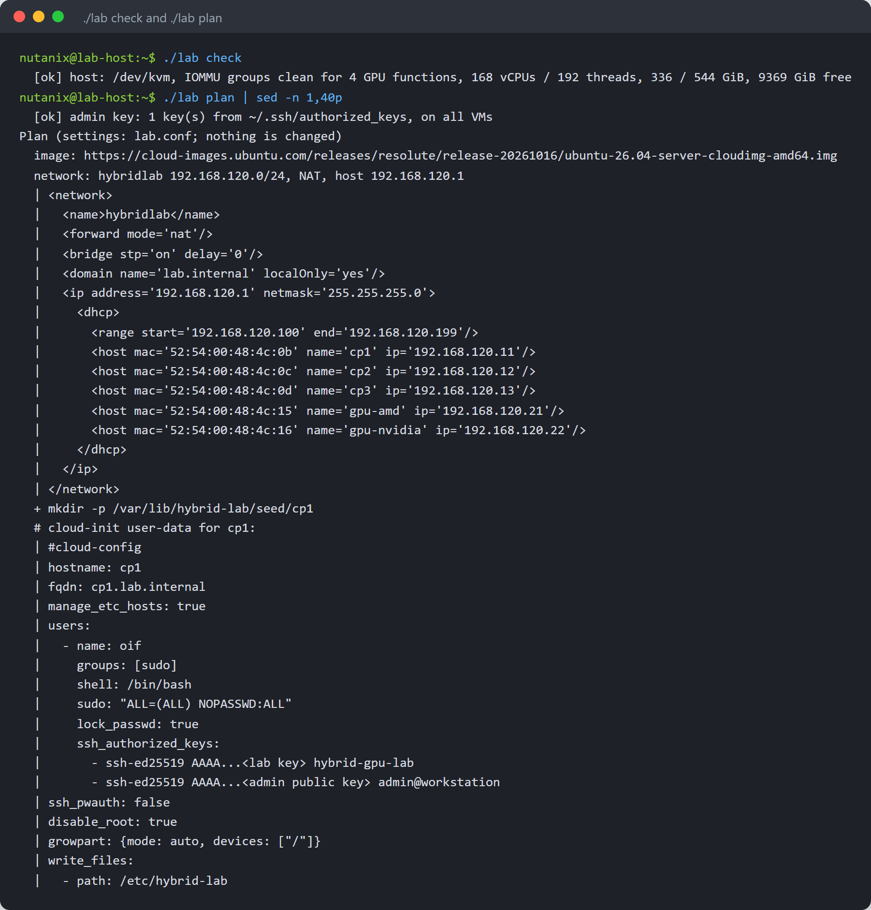
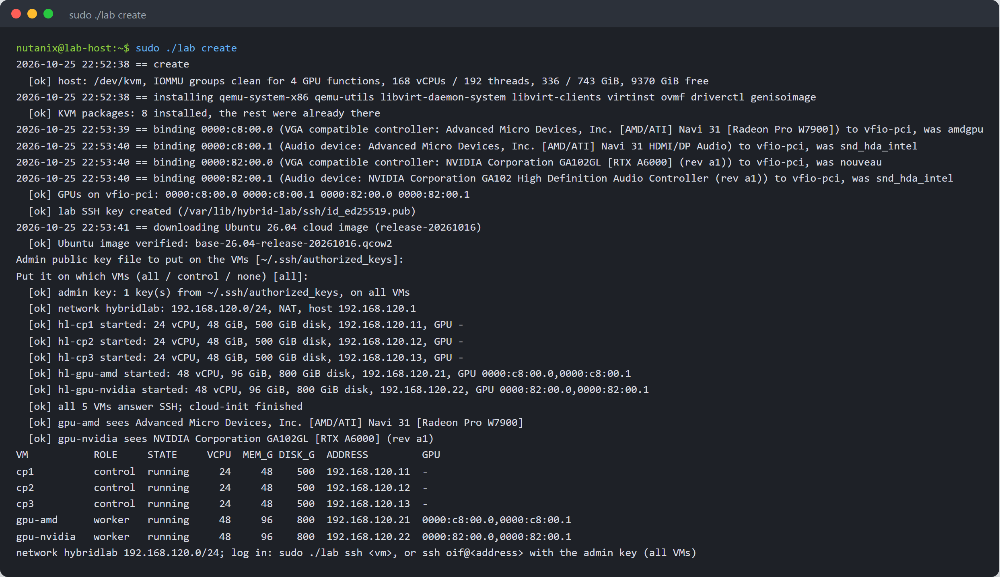
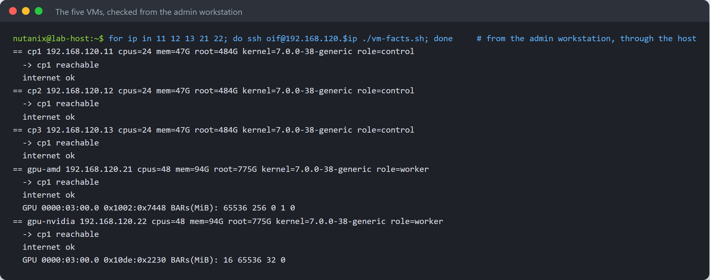
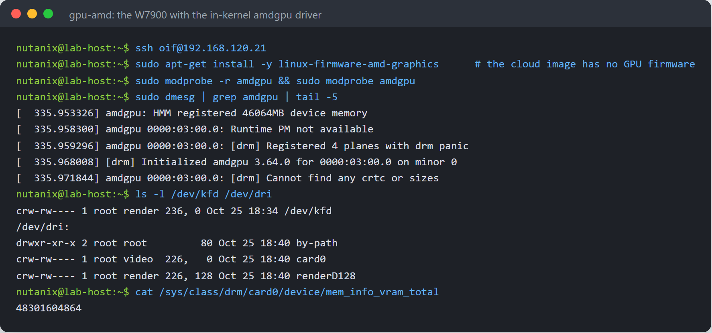
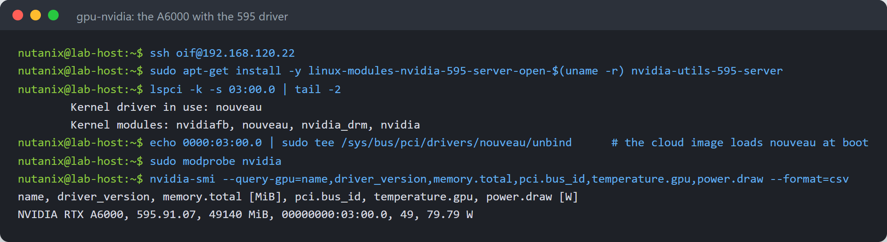
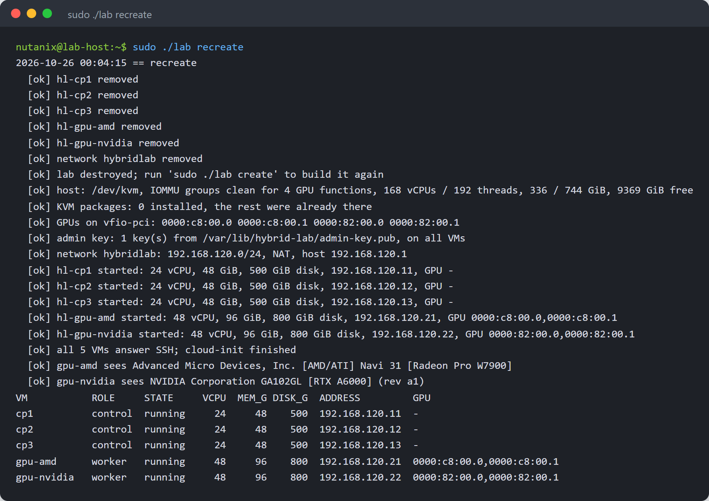
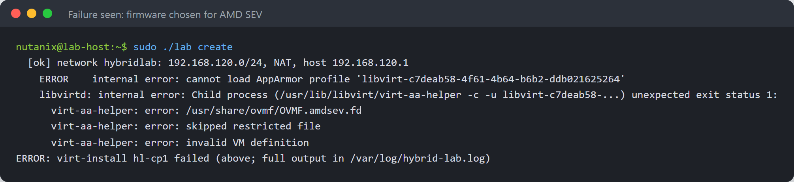

Hybrid GPU Cluster Lab
NVIDIA and AMD GPUs live in separate servers in production. This lab builds that on one machine with KVM: three control-plane VMs and two GPU workers, one with an AMD Radeon PRO W7900 and one with an NVIDIA RTX A6000 through PCI passthrough, on one private subnet. One command creates it, one destroys it; every screen here is from a real run.
1What you get
In production, NVIDIA and AMD GPUs are not in the same server: a customer has NVIDIA servers and AMD servers, and joining them into one cluster has been hard. This guide builds that situation on one machine, so a hybrid cluster can be installed, tested, torn down and rebuilt as often as needed:
- three control-plane VMs for a highly available Kubernetes control plane;
- one AMD GPU worker VM that owns a Radeon PRO W7900 through PCI passthrough;
- one NVIDIA GPU worker VM that owns an RTX A6000 the same way;
- all five on one private subnet with fixed addresses, ready to form a cluster;
- the admin's SSH key on the VMs (all of them, the control plane only, or none: the admin chooses), and a lab key for the tooling.
One command line, lab, builds and removes it. It is a separate project from the cluster installer: it builds machines, not Kubernetes. The next guide installs a hybrid Run:ai cluster on these VMs with oif.
Everything shown is from a real run on the reference host: Ubuntu 26.04.1, AMD EPYC 9684X, 751 GiB memory, an NVIDIA RTX A6000 and an AMD Radeon PRO W7900. Addresses on the lab's private subnet are shown as they are; the host's own address and name are placeholders.
| Step | When |
|---|---|
| Host setup: KVM packages, GPU binding, an 860 MB image download | the first create only |
| Create the five VMs and wait until they answer SSH | every create, a few minutes |
| Destroy: VMs, disks and network | every destroy; the host setup and image stay |
2Sizing
| VM | Role | vCPU | Memory | Disk | NIC | GPU |
|---|---|---|---|---|---|---|
| cp1, cp2, cp3 | control plane | 24 | 48 GiB | 500 GiB | 1 | none |
| gpu-amd | worker | 48 | 96 GiB | 800 GiB | 1 | AMD Radeon PRO W7900, 48 GB |
| gpu-nvidia | worker | 48 | 96 GiB | 800 GiB | 1 | NVIDIA RTX A6000, 48 GB |
| Total | 168 | 336 GiB | 3.1 TB (thin) |
The disks are thin: a fresh VM uses a few GB. The reference host has 192 threads, 751 GiB and 9 TB free on its data disk; the root disk is too small for the VM disks, so they go on the data disk (LAB_STORAGE).
| Address | Name |
|---|---|
| 192.168.120.1 | the host (NAT gateway) |
| 192.168.120.11, .12, .13 | cp1, cp2, cp3 |
| 192.168.120.21 | gpu-amd |
| 192.168.120.22 | gpu-nvidia |
| 192.168.120.100 to .199 | free DHCP range; .10 and .240 to .250 are left for a cluster address and load balancers |
3Before you start
- Ubuntu 26.04 on the host, with AMD-V (or VT-x) and the IOMMU enabled in the BIOS
- Each GPU in an IOMMU group of its own, together only with its HDMI audio function
- The GPUs not driving a display and not in use by anything on the host (no Kubernetes or GPU drivers using them)
- Memory, CPUs and disk space for the VMs; outbound HTTPS to cloud-images.ubuntu.com and the Ubuntu archive
- An SSH public key for the admin on the host (by default the keys you log in with)
Find the GPUs' PCI addresses and their groups:
lspci -nn | grep -Ei 'vga|3d|audio' for d in 0000:82:00.0 0000:82:00.1 0000:c8:00.0 0000:c8:00.1; do echo "$d group $(basename $(readlink /sys/bus/pci/devices/$d/iommu_group))"; done
4Get the lab and check the host
git clone https://github.com/manmohanbrahma/hybrid-gpu-lab.git cd hybrid-gpu-lab cp lab.conf.example lab.conf # set LAB_STORAGE and the GPUs' PCI addresses ./lab check # read-only: KVM, IOMMU groups, CPUs, memory, disk ./lab plan # what create would do; changes nothing
lab.conf holds one line per VM: name, role, vCPUs, memory, disk, the last octet of its address, and the GPU's PCI functions (every function of the card: the GPU and its audio device, because passthrough moves whole IOMMU groups).

5Create the lab
sudo ./lab create
On first use it sets up the host, then builds the VMs:
- Installs the KVM packages that are missing: QEMU, libvirt, virt-install, the OVMF firmware, driverctl and genisoimage. It records which ones it installed.
- Binds each GPU function to
vfio-pciwithdriverctl, so the host's drivers let go of the cards; the binding survives reboots. - Downloads the Ubuntu 26.04 cloud image of the pinned release and checks its SHA-256 checksum.
- Asks for the admin's public key and where to put it: all VMs, control-plane VMs only, or none. The answer is remembered.
- Creates the private NAT network, a thin disk per VM on top of the image, and each VM with cloud-init: host name, user
oifwith passwordless sudo, SSH keys only. - Waits until every VM answers SSH and cloud-init has finished, then checks that each GPU VM sees its card.

6Check the VMs
Log in with the admin key from the admin's workstation, through the host:
ssh -J <user>@<host-ip> oif@192.168.120.21
sudo ./lab ssh gpu-amd # or from the host with the lab key
sudo ./lab status
7The GPUs inside the VMs
The lab installs no GPU drivers: the cluster installer does that per node. To check the cards by hand, load each vendor's driver in its VM.
The W7900 with the kernel's own amdgpu driver. The cloud image has no GPU firmware, so install it first:
sudo apt-get install -y linux-firmware-amd-graphics sudo modprobe -r amdgpu && sudo modprobe amdgpu

The A6000 with the NVIDIA 595 server driver, the same version as on the bare-metal host. The cloud image loads nouveau at boot, so it has to let go of the card first:
sudo apt-get install -y linux-modules-nvidia-595-server-open-$(uname -r) nvidia-utils-595-server echo 0000:03:00.0 | sudo tee /sys/bus/pci/drivers/nouveau/unbind sudo modprobe nvidia && nvidia-smi

| VM | Needs on top of the cloud image | Then |
|---|---|---|
| gpu-amd | linux-firmware-amd-graphics | amdgpu in the Ubuntu kernel initialises the GPU |
| gpu-nvidia | nouveau blocked; NVIDIA kernel modules and utilities | nvidia-smi shows the GPU |
8Destroy and create again
sudo ./lab destroy # VMs, disks and network gone; host setup and image kept sudo ./lab recreate # destroy, then create

The GPUs stay on vfio-pci between runs, so a new VM gets its card straight away. A GPU whose driver was active when its VM was destroyed must reset before the next VM can use it; the W7900 is a workstation GPU, and this is the case worth testing on your hardware.
9SSH keys
| Key | Where | Used for |
|---|---|---|
| Admin's public key | all VMs, control-plane VMs only, or none (LAB_ADMIN_KEY_ON) | the admin logs in as oif |
Lab key, /var/lib/hybrid-lab/ssh/id_ed25519 (root-only) | every VM | ./lab ssh and the readiness checks |
The admin's choice is asked once and kept; set LAB_ADMIN_KEY and LAB_ADMIN_KEY_ON in lab.conf to skip the question. Password login is off on every VM. The cluster installer brings its own key for the cluster and asks again whether the admin's key stays on the control plane.
10What changes on the host
| Change | Removed by |
|---|---|
| KVM packages the lab installed (recorded) | sudo ./lab host-clean |
GPU functions bound to vfio-pci (driverctl, kept across reboots) | host-clean; reboot for a clean driver start |
libvirt network hybridlab and the VMs hl-*, their disks in LAB_STORAGE | sudo ./lab destroy |
/var/lib/hybrid-lab (state, lab key, cloud-init seeds) and the base image | host-clean (the log /var/log/hybrid-lab.log stays) |
sudo ./lab host-clean # destroy, then undo the host setup11Troubleshooting

| Problem | Cause and fix |
|---|---|
cannot load AppArmor profile, virt-aa-helper: error: /usr/share/ovmf/OVMF.amdsev.fd ... skipped restricted file | libvirt chose the AMD SEV firmware on an EPYC host. The lab names OVMF_CODE_4M.fd (LAB_OVMF_CODE, LAB_OVMF_VARS); secure boot stays off so the NVIDIA driver loads. |
<address> shares IOMMU group ... with ... | Another device is in the GPU's group: list every function of the card in lab.conf, or move the card to another slot. |
| The host hangs while binding a GPU to vfio-pci | The host's driver could not let go of the card: reboot; the binding is saved and takes effect at boot. |
amdgpu ... Direct firmware load ... failed, Fatal error during GPU init in gpu-amd | The cloud image has no GPU firmware: install linux-firmware-amd-graphics. |
NVRM: GPU ... is already bound to nouveau in gpu-nvidia | Block nouveau (or unbind it) before loading nvidia. |
| A VM does not answer SSH after 10 minutes | sudo virsh console hl-<name> shows its boot; sudo ./lab recreate builds it again. |